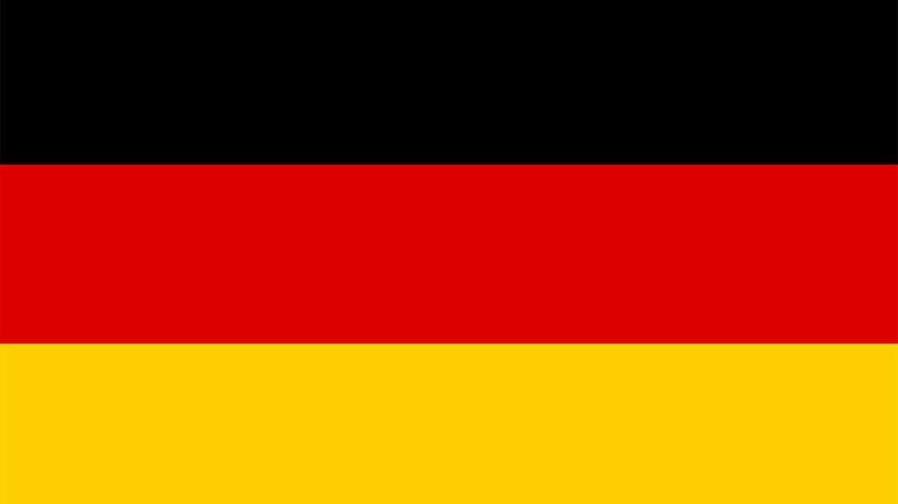
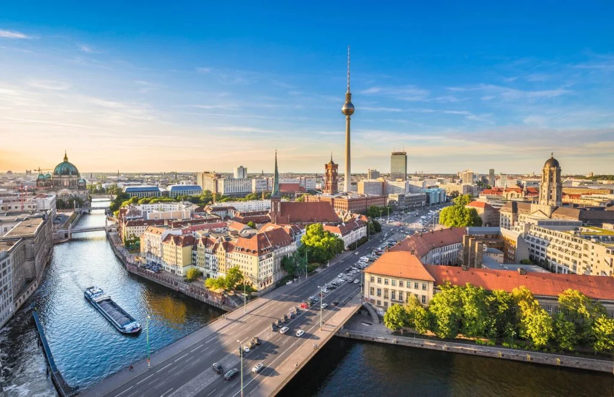
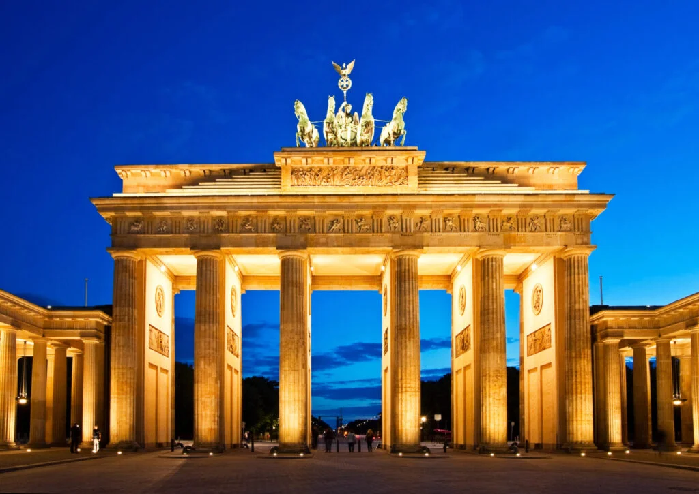

Německo
Německo je jednou z největších a nejvlivnějších zemí v Evropě, známé svou silnou ekonomikou a vysokou životní úrovní. Leží ve střední Evropě a sousedí s mnoha zeměmi, díky čemuž je důležitým dopravním a kulturním centrem. Hlavním městem je Berlín, který je proslulý svou historií, architekturou i moderním uměním. Německo je federativní stát, který se skládá ze 16 spolkových zemí, z nichž každá má vlastní tradice a specifickou kulturu. Země je známá kvalitním vzdělávacím systémem, technologií a precizností v průmyslu. Významnou roli hraje také německý jazyk, který patří mezi nejrozšířenější v Evropě.


Německo nabízí mnoho zajímavých míst, která stojí za návštěvu. Oblíbeným cílem turistů je Berlín, kde se nachází Braniborská brána, Berlínská zeď a řada muzeí na Muzejním ostrově. Krásné historické centrum má také Mnichov, známý Oktoberfestem, pivnicemi a blízkostí Alp. Za vidění stojí i romantická oblast kolem Rýna, kde se nachází četné hrady a vinice. Velmi populární je také zámek Neuschwanstein, který inspiroval Disneyho. Německo nabízí i mnoho přírodních krás, například Černý les nebo Saské Švýcarsko. Turisté zde mohou kombinovat historii, kulturu i aktivní odpočinek.
